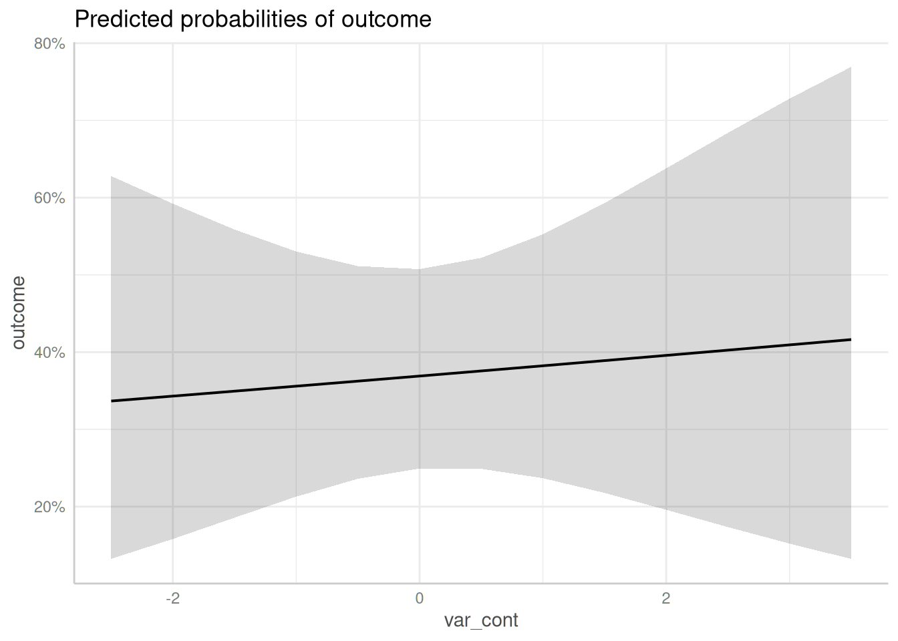

Case Study: Logistic Mixed Effects Model with Interaction Term
Daniel Lüdecke
2024-02-19
Source:vignettes/practical_logisticmixedmodel.Rmd
practical_logisticmixedmodel.RmdThis vignette demonstrate how to use ggeffects to compute and plot marginal effects of a logistic regression model. To cover some frequently asked questions by users, we’ll fit a mixed model, including an interaction term and a quadratic resp. spline term. A general introduction into the package usage can be found in the vignette marginal effects of regression model.
First, we load the required packages and create a sample data set with a binomial and continuous variable as predictor as well as a group factor. To avoid convergence warnings, the continuous variable is standardized.
library(magrittr)
library(ggeffects)
library(lme4)
library(splines)
set.seed(123)
dat <- data.frame(
outcome = rbinom(n = 100, size = 1, prob = 0.35),
var_binom = as.factor(rbinom(n = 100, size = 1, prob = 0.2)),
var_cont = rnorm(n = 100, mean = 10, sd = 7),
group = sample(letters[1:4], size = 100, replace = TRUE)
)
dat$var_cont <- datawizard::standardize(dat$var_cont)Simple Logistic Mixed Effects Model
We start by fitting a simple mixed effects model.
m1 <- glmer(
outcome ~ var_binom + var_cont + (1 | group),
data = dat,
family = binomial(link = "logit")
)For a discrete variable, marginal effects for all levels are calculated by default. For continuous variables, a pretty range of values is generated. See more details about value ranges in the vignette marginal effects at specific values.
For logistic regression models, since ggeffects returns marginal effects on the response scale, the predicted values are predicted probabilities. Furthermore, for mixed models, the predicted values are typically at the population level, not group-specific.
ggpredict(m1, "var_binom")
#> # Predicted probabilities of outcome
#>
#> var_binom | Predicted | 95% CI
#> ----------------------------------
#> 0 | 0.37 | 0.25, 0.51
#> 1 | 0.38 | 0.18, 0.62
#>
#> Adjusted for:
#> * var_cont = -0.00
#> * group = 0 (population-level)
ggpredict(m1, "var_cont")
#> Data were 'prettified'. Consider using `terms="var_cont [all]"` to get
#> smooth plots.
#> # Predicted probabilities of outcome
#>
#> var_cont | Predicted | 95% CI
#> ---------------------------------
#> -2.50 | 0.34 | 0.13, 0.63
#> -2.00 | 0.34 | 0.16, 0.59
#> -1.00 | 0.36 | 0.21, 0.53
#> 0.00 | 0.37 | 0.25, 0.51
#> 0.50 | 0.38 | 0.25, 0.52
#> 1.00 | 0.38 | 0.24, 0.55
#> 2.00 | 0.40 | 0.20, 0.64
#> 3.50 | 0.42 | 0.13, 0.77
#>
#> Adjusted for:
#> * var_binom = 0
#> * group = 0 (population-level)
#>
#> Not all rows are shown in the output. Use `print(..., n = Inf)` to show
#> all rows.To plot marginal effects, simply plot the returned results or use the pipe.


Logistic Mixed Effects Model with Interaction Term
Next, we fit a model with an interaction between the binomial and continuous variable.
m2 <- glmer(
outcome ~ var_binom * var_cont + (1 | group),
data = dat,
family = binomial(link = "logit")
)To compute or plot marginal effects of interaction terms, simply
specify these terms, i.e. the names of the variables, as character
vector in the terms-argument. Since we have an interaction
between var_binom and var_cont, the argument
would be terms = c("var_binom", "var_cont"). However, the
first variable in the terms-argument is used as
predictor along the x-axis. Marginal effects are then plotted for
specific values or at specific levels from the second
variable.
If the second variable is a factor, marginal effects for each level are plotted. If the second variable is continuous, representative values are chosen (typically, mean +/- one SD, see marginal effects at specific values).
ggpredict(m2, c("var_cont", "var_binom")) %>% plot()
#> Data were 'prettified'. Consider using `terms="var_cont [all]"` to get
#> smooth plots.

Logistic Mixed Effects Model with quadratic Interaction Term
Now we fit a model with interaction term, where the continuous variable is modelled as quadratic term.
m3 <- glmer(
outcome ~ var_binom * poly(var_cont, degree = 2, raw = TRUE) + (1 | group),
data = dat,
family = binomial(link = "logit")
)Again, ggeffect automatically plots all high-order terms
when these are specified in the terms-argument. Hence, the
function call is identical to the previous examples with interaction
terms, which had no polynomial term included.
ggpredict(m3, c("var_cont", "var_binom")) %>% plot()
#> Model contains splines or polynomial terms. Consider using
#> `terms="var_cont [all]"` to get smooth plots. See also package-vignette
#> 'Marginal Effects at Specific Values'.
As you can see, ggeffects also returned a message indicated that the plot may not look very smooth due to the involvement of polynomial or spline terms:
Model contains splines or polynomial terms. Consider using
terms="var_cont [all]"to get smooth plots. See also package-vignette ‘Marginal Effects at Specific Values’.
This is because for mixed models, computing marginal effects with
spline or polynomial terms may lead to memory allocation problems. If
you are sure that this will not happen, add the [all]-tag
to the terms-argument, as described in the message:

The above plot produces much smoother curves.
Logistic Mixed Effects Model with Three-Way Interaction
The last model does not produce very nice plots, but for the sake of demonstration, we fit a model with three interaction terms, including polynomial and spline terms.
set.seed(321)
dat <- data.frame(
outcome = rbinom(n = 100, size = 1, prob = 0.35),
var_binom = rbinom(n = 100, size = 1, prob = 0.5),
var_cont = rnorm(n = 100, mean = 10, sd = 7),
var_cont2 = rnorm(n = 100, mean = 5, sd = 2),
group = sample(letters[1:4], size = 100, replace = TRUE)
)
m4 <- glmer(
outcome ~ var_binom * poly(var_cont, degree = 2) * ns(var_cont2, df = 3) + (1 | group),
data = dat,
family = binomial(link = "logit")
)Since we have marginal effects for var_cont at the levels of
var_cont2 and var_binom, we not only have groups, but
also facets to plot all three “dimensions”. Three-way interactions are
plotted simply by speficying all terms in question in the
terms-argument.